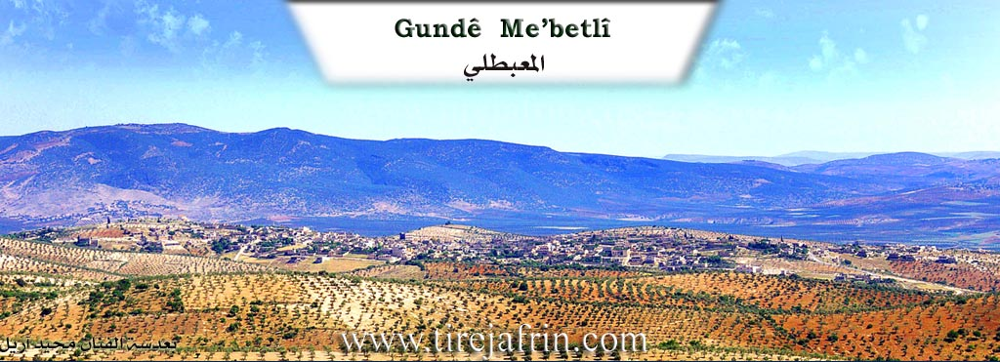
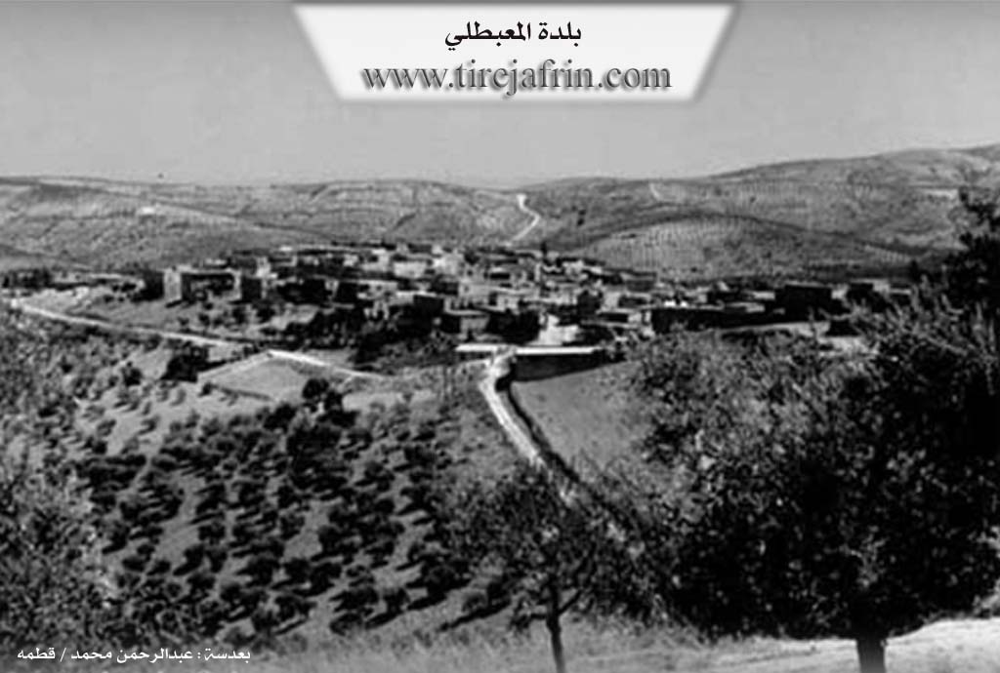

General Information
Nahiya (Subdistrict)
Mabeta
Also Known As
Al-Mabetli, Mabata, Mabeta, Mabetli, معبطلي
Families, Clans, etc.
Alo, Açûlo, Bilêl, Ebû Ciwan, Ebû Omer, Ehmelî, Elî Şêx Îsmaîl Zade Axa, Gûzeleka, Gûzeleko, Kopiziya, Mehmûd Aliyo, Mistî 'Eşînû, Qarpûz, Qarpûza, Reşkole, Seydî Tûpê, Seyîd Xaço

Photos


Basic Information about Mabeta
Source: Ax û Welat
Etymology: Derived from the word 'malbat' (families), signifying the union of separate families who settled together
Shrines: Dede Elî, Pîrê Baranê
Source: Afrin 366
Etymology: Derived from 'Malbeta' meaning four families, or 'Mehebet' meaning love and reconciliation
Foundation Date/Period: 700 years or more
Summaries
I. Summary from TirejAfrin Site (English) of Mabeta
Source: https://www.tirejafrin.com/site/kura%20afrin%20%20%20mebetli%20-%20mebet.htm
According to the book Çiyayê Kurmênc (Efrîn): A Geographical Study by Dr. Mihemed Ebdo Elî, the Mabeta sub-district consists of 42 administrative divisions. Its center is the town of Mabeta. Its boundaries are: to the north, the Reco sub-district; to the west, the Şiyê sub-district; to the south, the Cindirês sub-district; and to the east, the sub-districts of Central Efrîn and Şera. The entry for Mabeta (7663 inhabitants, 530m elevation) states:
Regarding the name of the town, some residents say it is derived from the Arabic word "Mahabba" (love). The Kurds pronounce it with an open 't' as "Muhubet," a quality that distinguished its residents. Due to the absence of the distinct Arabic 'H' sound in the Kurdish language, the pronunciation shifted to Mabeta. There are those who say the name is derived from "Malbeta" (Families), meaning the four fundamental families in the town. However, I believe it is a Kurdish corruption of the word "Al al-Bayt" into "Malbet," meaning "followers of the Family of the House," given that its residents are followers of the Alevi faith.
The town is situated atop a limestone plateau that slopes steeply toward the north, west, and east. It connects in the west with the village of Qentere. It is located 15km northwest of the city of Efrîn. Buildings in the style of beautiful villas have begun to appear there, and currently, there is no more room left on the plateau for the town's expansion. It contains simple commercial shops, workshops for vehicle maintenance, and modern blacksmithing. The residents work in agriculture, particularly olives and vines. It houses a recruitment division and a health center, in addition to the municipality and the sub-district administration. Mabeta was the center of the Kurd Dax district at the beginning of the French Mandate over Syria.
According to the book Efrîn... Her River and Her Green Hills by the writer Ebdulrehman Mihemed from the village of Qetme:
Mabeta is a town in Çiyayê Kurmênc (Mountain of the Kurds). It is a sub-district center administratively belonging to the Efrîn area, Heleb governorate. It is a large town located in the middle section of the mentioned mountain, atop an undulating limestone plateau elongated from east to west at an elevation of 560m. It is covered by olive trees and natural pine. The plateau slopes steeply toward the north, west, and east. It connects in the west to the village of Qentere and from the north to the village of Qitranlî. Its soil is clay-like, furrowed by water streams from several sides. It is 15km northwest of the city of Efrîn.
It is bordered to the north by a slope, a water stream, a mountainous height, and the nearby village of Qitranlî at a distance of 1km. To the south, it is bordered by a rugged slope, mountainous heights, several streams, and the village of Mîrkanlî. To the east, there is a steep slope, several streams planted with olive trees, and the villages of Kokan Jorîn and Kokan Jêrin. To the west, a few meters away, is the village of Qentere which is connected to the town, and at a distance of 2km is the village of Ereb Uşaxî.
The number of its houses is approximately 750, and its age is about 500 years. Its population reached approximately 7235 people according to the civil registry records of the town at the end of 2004, while the total population of the Mabeta sub-district is 52536 people. Its old houses are made of stone and mud with flat wooden roofs, while modern construction has expanded, especially toward the southeast. Recently, beautiful buildings in the form of multi-story villas have begun to appear. They are spread beautifully across the plateau. Currently, there is not much spacious land remaining due to the expansion of the construction footprint in the town.
There is a valley in the middle of the town that divides it into two parts (Northern and Southern). An electricity network is available, as well as a water network connected to a reservoir from a well at the bottom of the town on the western side, which belongs to the state. The town also contains several official departments similar to those available in a sub-district center (a police station, telephone center, municipality house, party division, consumer institution, peasant society, several modern presses for olive pressing, a group of primary, preparatory, and secondary schools, a center for the sub-district directorate, a recruitment division, and a mosque in the center of the village).
Its residents work in rain-fed grain farming (legumes, vines, olives, and other fruit trees). There is also irrigated agriculture on an area of 25 hectares irrigated from artesian wells, growing summer vegetables, walnuts, and pomegranates, alongside raising sheep and goats. A section of the residents works in some light food industries such as olive pressing, dairy derivatives, and drying vegetables and fruits. Others work outside the town in various institutions and jobs in large cities. The town also has a commercial center for shopping for the town and its vicinity. It is connected to the regional center by a paved road which passes through its center to several villages.
Among its most important families is the family of Elî Şêx Îsmaîl Zade Axa and others who were the first to inhabit the village since ancient times.
Town of Mabeta: A town located in Çiyayê Kurmênc, belonging to the Efrîn area, Heleb governorate. It is the center of the sub-district. It is bordered to the north by the sub-districts of Bilbil and Reco, to the west by the sub-district of Şiyê, to the south by the sub-district of Cindirês and the villages of Şiyê, and to the east by the sub-district of Şera and the Central Efrîn sub-district. The town consists of several villages and farms, comprising 34 villages and 10 farms. All its lands are clay and mountainous, planted with forest trees, olives, vines, walnuts, and almonds.
Among the holders of higher degrees in the village:
Hesen Qelender (PhD in Statistics and Computer Science / France)
Ebdulhemîd Qelender (PhD in Food Industries / France)
Azad Hemûto (PhD in Archaeology and History / West Germany)
Village Mukhtar: Cemîl Mistefa Mihemed
Sources:
- Book: جبل الكرد (عفرين) دراسة جغرافية Çiyayê Kurmênc (Efrîn): A Geographical Study by د. محمد عبدو علي Dr. Mihemed Ebdo Elî.
- Book: عفرين .... نهرها وروابيها الخضراء Efrîn... Her River and Her Green Hills by عبدالرحمن محمد Ebdulrehman Mihemed from the village of Qetme.
Preparation and Execution:
- Manager of Tirej Efrîn site: Ebdulrehman Hacî Osman
- 20/12/2013
II. Summary of Mabeta from Ax û Welat
Source: https://www.youtube.com/watch?v=ryF5tfYVOc0
The town of Mabeta, located 17 kilometers from the city of Efrîn in the region of Çiyayê Kurmênc, is a prominent center for Elewî Kurds. The name Mabeta is locally interpreted to stem from the word malbat (families), referencing the town's origins as a settlement formed by the unification of several distinct lineages. According to local elders, the first family to settle the area was the Qarpûz family, followed by the Alo, Açûlo, Gûzeleko, Mehmûd Aliyo, and Seyîd Xaço families. Today, the town consists of approximately 700 to 800 households and sustains itself primarily through Zeytûn (olive) cultivation, despite suffering from a scarcity of water sources in the immediate vicinity.
The spiritual focal point of Mabeta is the shrine of Dede Elî, a holy figure revered as a welî. The site is historically significant and is associated with the local Elewî identity, which residents assert was once the dominant faith of the entire Efrîn and Maraş region before Osmanî (Ottoman) policies forced many toward the Sunni sect. The shrine of Dede Elî is also known by the title Pîrê Baranê (The Elder of the Rain). This title originated from a miraculous event during a drought when villagers gathered at the shrine to pray; rain reportedly fell immediately but stopped exactly at the boundary of the shrine's trees. The site is also a destination for healing. One account describes a man from Xims who dreamt of the shrine and traveled there to perform a sacrifice, which resulted in the curing of his son's Pênceşêr (cancer).
The inhabitants of Mabeta view their history as deeply ancient, citing the presence of local ruins and stones as evidence of their connection to the Hûrî, Mîtanî, and Bîzantîn civilizations, whom they regard as the ancestors of the Kurds. Culturally, the town preserves specific local legends, such as the story of Tûsin o (real name Ebdik), an outlaw figure remembered in song. This legend is tied to the visit of a historical figure named Ehmed Agha Şêx Ismaîl.
Religious life in Mabeta is guided by leaders such as Şêx Cûmerd, who identifies the community's faith with the Bektaşî path and the love of the Ehlûl Beyt. He emphasizes the spiritual light of Îmam Elî and the lineage of figures like Fatime, Hesen, and Huseyn. While Mabeta is a central hub, residents note that other nearby villages such as Alkana, Gundê Xelîl, and Xidiriya also contain shrines and tombs of Dedes, preserving the region's religious heritage.
II. Summary of Mabeta from Afrin 366
Source: https://www.youtube.com/watch?v=jV5LUWyIBYs
The substantial town of Mabeta, located in the Afrin region, is depicted as a historical and administrative hub with a lineage stretching back over seven centuries. According to the host, the settlement is more than 700 years old. There is a specific discourse regarding the etymology of the name Mabeta. The host suggests it evolved from "Malbeta," referring to the four original families who settled there. However, a local elder and primary interviewee, Ismet (also addressed as Ebû Hesen from the Reşkole family), corrects this interpretation. He states the name is derived from "Mehebet," meaning love or affection. He explains that historically, if people were in conflict or could not sleep due to grievances, they would come to this location to reconcile, thus earning it the name associated with peace and affection.
The social structure of Mabeta is defined by four foundational families. Ismet lists these primary lineages as the Alo, the Qarpûza, the Gûzeleka, and the Kopiziya families. These groups are considered the most famous and historical inhabitants. Over time, the population grew significantly, reaching approximately 8,000 people in the past, though migration and current circumstances have reduced this number to roughly 5,000 residents. Other specific family names mentioned during the tour include Seydî Tûpê (specifically a member named Habû), Ehmelî, Mistî 'Eşînû, Ebû Omer, Ebû Ciwan, and the Bilêl family (specifically Mihemedî Bilêl, Hecî Bilêl, and 'Arfî Bilêl).
Mabeta is distinguished by its size and development, described more as a town or small city than a village. It serves as a district center (nahiye) with multi-story buildings reaching four to six floors, paved roads, and educational facilities extending to the baccalaureate level. Economically, the area is known for its olives (zeytûna), vineyards (reza), and fruit trees. The documentary features a visit to the home of Ebû Hesen, showcasing a lush courtyard filled with vegetables and fruit trees, which he refers to locally as "kender."
In a discussion on identity and origins, Ebû Hesen asserts a deep historical lineage for the people of the region. He rejects modern political labels, stating, "We are Hûrî, we are Mîtanî," referring to the ancient Hurrian and Mitanni civilizations. He claims that the exonym "Kurd" was applied to them by Greek philosophers or Romans to signify "lions" or "lions of the mountains," but emphasizes their indigenous roots as Hûrî. The narrative concludes with a call for the diaspora in Europe to return and invest in local projects, such as battery factories or agricultural infrastructure, to support the remaining population.
Transcriptions and Subtitles
| Source | Video | Subtitles | Transcript |
|---|---|---|---|
| Ax û Welat 1 | Watch Video | Download SRT | View Transcript |
| Afrin 366 1 | Watch Video | Download SRT | View Transcript |
Foundation/Origin Information of Mabeta
First inhabited by the family of Ali Sheikh Ismail Zadeh Agha and others.
Source: TirejAfrin Site
Founded by four families: Malê Olo, Malê Qerpeşo, Guzelko, and Qopezo.
Source: Afrin 366 Transcript
Possible Village Name Meaning of Mabeta
Derived from the Arabic word "mahabbah" love, pronounced by Kurds as "muhabbet," which became "Mabeta." Another theory is from "Malbeta" the families, referring to the four basic families. A third theory is a Kurdish modification of "Al al-Bayt" Malbet, meaning "followers of Al al-Bayt," as inhabitants are Alawi.
Source: TirejAfrin Site
Evolved from "Malbato," meaning "four households," in reference to its original four founding families. Another origin is "Mahabat," meaning "the place of affection," because it served as a traditional site where feuding parties would come to reconcile.
Source: Afrin 366 Transcript
V. Links
- Tirej Afrin:
https://www.tirejafrin.com/site/kura%20afrin%20%20%20mebetli%20-%20mebet.htm - Ax û Welat:
https://www.youtube.com/watch?v=ryF5tfYVOc0 - Jawlat:
https://www.youtube.com/watch?v=v7BFUaKgblU - Link:
https://www.youtube.com/watch?v=5pixTkTIiLE - Drone:
https://www.youtube.com/watch?v=facglXsnMkw - Local FB page:
https://www.facebook.com/Mabeta12 - Link:
https://www.facebook.com/MobatoNews/ - Link:
https://www.facebook.com/janyar.khoja - Video:
https://www.youtube.com/watch?v=qDe2ZUfAuXg - Link:
https://www.youtube.com/watch?v=idpUzccrGls - Afrin 366:
https://www.youtube.com/watch?v=jV5LUWyIBYs